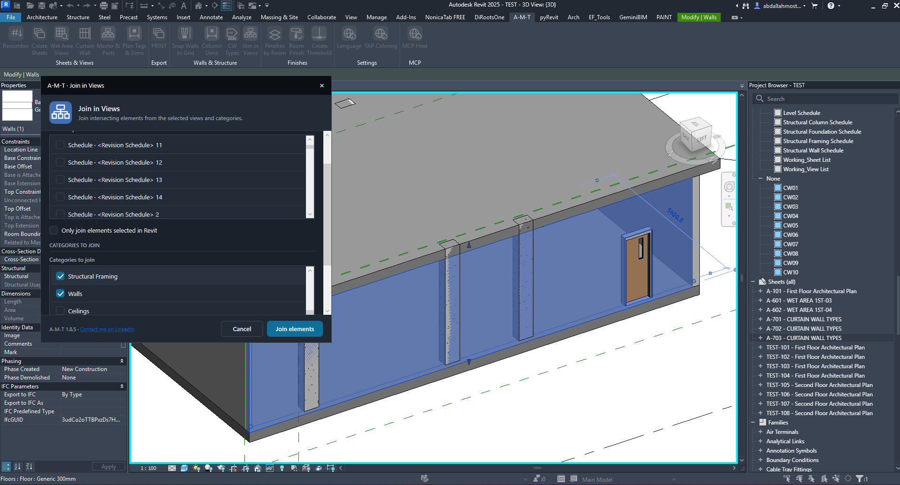
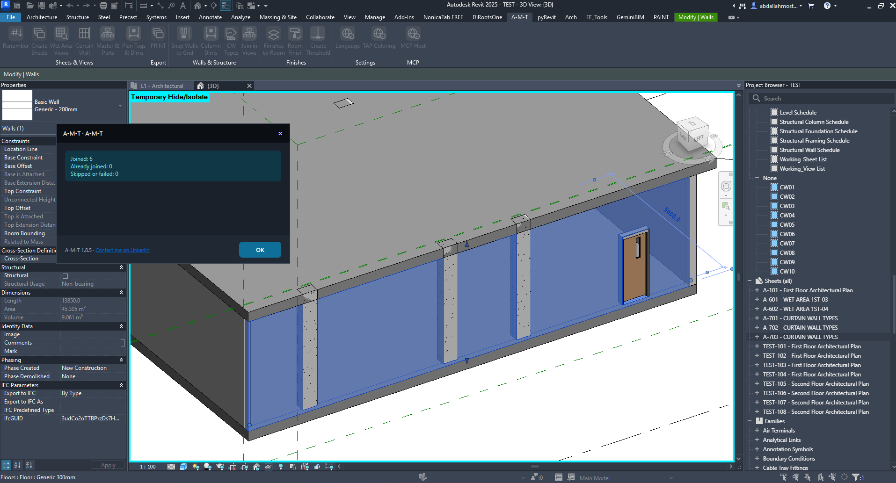

Join in Views
Run Revit join operations across chosen project views and element categories. Define the views to process, select the categories to include, and review the join report when the command finishes.
How the command works
Join in Views uses a simple setup: define the view scope, choose the categories, then run and inspect the result.
1. Choose the views to process
The upper list defines which project views are included in the join operation.
Select the target views
The dialog lists project views with checkboxes. Select the views in which A-M-T should attempt the join operation. Use the list's scrollbar to reach additional views.
- View list — select one or more project views to include in the run.
- Only join elements selected in Revit — enable this option when the operation should be restricted to the elements currently selected in Revit.

2. Select the categories to join
Choose which element categories the command should include in the join workflow.
Categories to join
Enable the required categories from the list. The example shows Structural Framing and Walls selected.
Additional categories
Scroll through the category list to review and select other available categories, such as ceilings, roofs, columns and foundations.
Join elements
Starts the operation using the selected views, optional Revit selection scope, and enabled categories.
Cancel
Closes the dialog without running the join operation.
Select only the categories needed for the current task. The available list can be scrolled to access categories that are not currently visible.
3. Run the command and review the report
After clicking Join elements, A-M-T displays a summary of the operation.
Understand the result counts
Joined
Number of elements successfully joined during this run.
Already joined
Elements that were already joined, so no new join was required.
Skipped or failed
Elements that were not joined or could not be processed successfully.
OK
Closes the result report after you have reviewed the counts.

4. Verify the result in Revit
Return to the model view and inspect the geometry affected by the operation.
The demonstration shows the wall and structural framing geometry in the 3D view before and after the command. Review the relevant intersections in your model and confirm that the resulting joins match the intended construction relationships.
Watch Join in Views in Action
Follow the complete workflow inside Autodesk Revit.
Quick checklist
Before running
Confirm the correct project views are selected and the intended categories are enabled.
Selection scope
Enable Only join elements selected in Revit only when you intend to limit processing to the current selection.
After running
Review all three result counts: Joined, Already joined, and Skipped or failed.
Model verification
Inspect the affected intersections and confirm the joins are appropriate for the model.